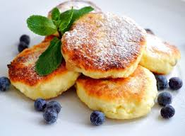

Рецепт сирників від ТМ Рудь®

Інгредієнти:
- Сир 9% -
250 г 350 г
- Яйце куряче - 2 шт.
- Борошно пшеничне - 6 ст.л.
- Цукор - 2 ст.л.
- Олія соняшникова -
3 ст.л. 5 ст.л.
До сирників можна додати сметану, згущене молоко, йогурт чи любі соуси на смак. Смачного!